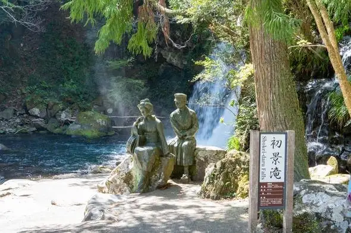
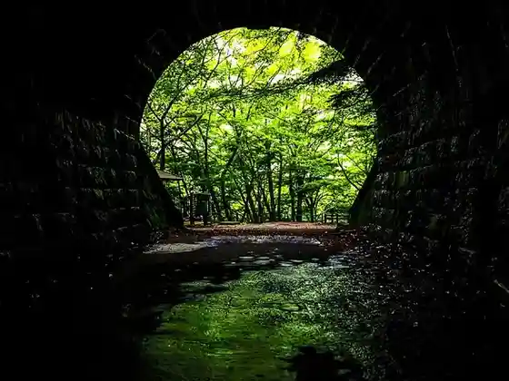
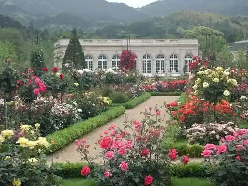
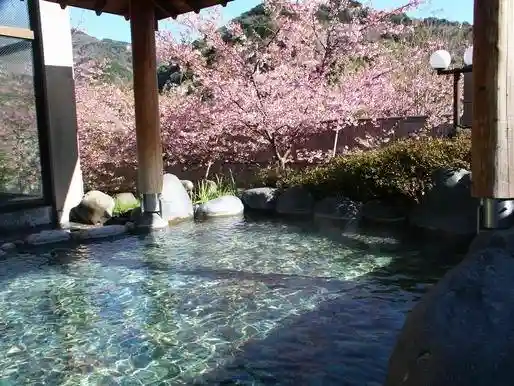

Japan / Shizuoka / Kawazu
Kawazu, Shizuoka
Kawazu · Shizuoka
Kawazu
Highlighted on the Shizuoka map.

Sights
Kawazu Shichi Taki
Kawazu, Shizuoka · 0558-32-0290 · Official / source link
Kyu Amagi Tonneru
Kawazu, Shizuoka · 0558-85-1056 · Official / source link

Kawazu Bagateru Park
Kawazu, Shizuoka · 0558-34-2200 · Official / source link

Kawazu Sakura Namiki
Kawazu, Shizuoka · 0558-32-0290 · Official / source link
Odoriko Onsen Hall
Kawazu, Shizuoka · 0558-32-2626 · Official / source link

Kappa no Tera Sei Ashi Tera
Kawazu, Shizuoka · 0558-32-0896 · Official / source link
Izu Orenji Center
Kawazu, Shizuoka · 0558-32-1134 · Official / source link
Izu no Odoriko no Yado Fukuda Ie
Kawazu, Shizuoka · 055-835-7201 · Official / source link
Taikan Kata Zoo iZoo
Kawazu, Shizuoka · 0558-34-0003 · Official / source link
Taikan Kata Kaeru Kan KawaZoo
Kawazu, Shizuoka · 055-836-3990 · Official / source link
Izu Naranda Village Kawazu Heian no Butsuzo Tenjikan
Kawazu, Shizuoka · 055-834-0115 · Official / source link
Imai Hama Beach
Kawazu, Shizuoka · 0558-32-0290 · Official / source link